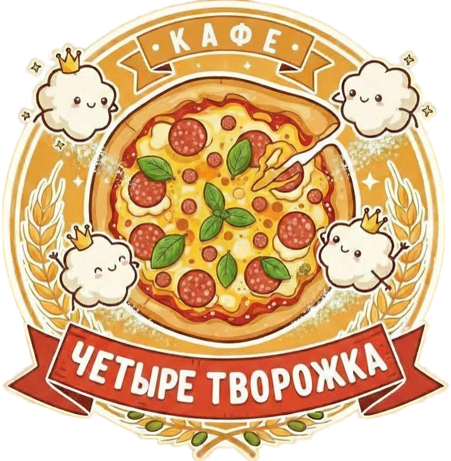

«Четыре творожка» — это кафе честной еды, где встретились бабушкины рецепты и современная кухня. Мы открылись в 2020 году с миссией кормить людей вкусной едой без полуфабрикатов, заменителей и компромиссов. Готовим с душой — от сырников до бургеров, от наваристых супов до итальянской пиццы.
Просто загляните к нам в гости! Мы находимся по адресу: ул. Асаткина, 32. Работаем ежедневно с 9:00 до 23:00. Вы можете забронировать столик или прийти прямо сейчас. Первый заказ — скидка 20%!
Вы можете заказать еду, просто придя к нам в кафе, или забронировать столик по телефону +7 (904) 033-08-49. Также вы можете выбрать блюда из нашего меню — у нас более 50 позиций: от сырников и десертов до пиццы, бургеров и супов.
Мы принимаем карты Visa/Mastercard/Мир, Сбер Pay, а также наличные. Оплата возможна как в кафе, так и при бронировании. Каждому гостю — внимание, честные цены и никаких скрытых комиссий.
Сейчас мы работаем в формате уютного кафе, где вы можете насладиться свежеприготовленными блюдами в домашней атмосфере. Приходите к нам по адресу: ул. Асаткина, 32. Мы работаем ежедневно с 9:00 до 23:00. Завтраки, обеды и ужины — весь день!